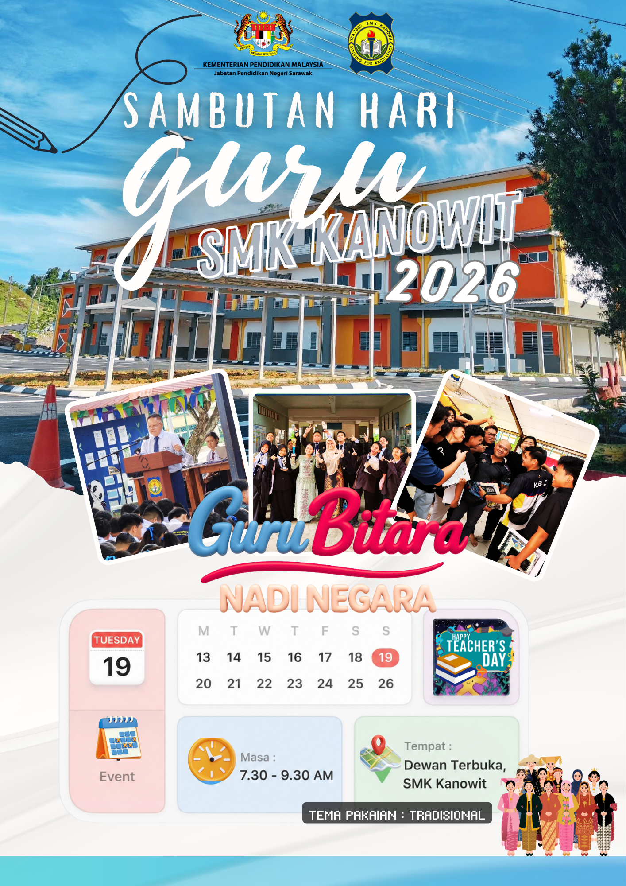

Poster Hari Guru

Tentatif Program
07.00 pagi
Ketibaan tetamu dan kehadiran guru-guru
07.10 pagi
- Ketibaan Pengetua
- Nyanyian Lagu Negaraku
- Nyanyian Lagu Ibu Pertiwi
- Bacaan doa
07.20 pagi
- Ucapan alu-aluan wakil pelajar
- Ucapan Pengetua SMK Kanowit
07.35 pagi
- Bacaan Perutusan Ketua Pengarah Pendidikan Malaysia
- Bacaan Perutusan Menteri Pendidikan Malaysia
07.45 pagi
- Ikrar Hari Guru
- Pemotongan kek Hari Guru
07.55 pagi
- Persembahan guru
- Penyampaian hadiah kelas
- Penyampaian hadiah guru
08.10 pagi
- Nyanyian Hari Guru: "Pendidik Bumi Kenyalang"
- Nyanyian "Kami Guru Malaysia"
08.20 pagi
Nyanyian Lagu Sekolah "Wawasan Sejati"
08.25 pagi
Jamuan khas Hari Guru
08.30 pagi
Bersurai
Ikrar Hari Guru
"Bahawasanya kami, guru-guru negara Malaysia dengan ini berikrar, mendukung terus cita-cita kami terhadap tugas kami dan menyatakan keyakinan kami pada cita-cita murni pekerjaan kami."
"Kami akan berbakti kepada masyarakat dan negara kami. Kami sentiasa menjunjung Perlembagaan negara, kami mengamalkan prinsip-prinsip Rukun Negara pada setiap masa."
Ikrar Diketuai Oleh:
En. Balintian Anak Nobert Jubit
Penolong Kanan Hal Ehwal Murid
Lirik Lagu Rasmi
1. Kami Guru Malaysia
Kami Guru Malaysia
Berikrar dan berjanji
Mendidik dan memimpin
Putra putri negara kita
Pada Seri Paduka
Kami tumpahkan setia
Rukun Negara kita
Panduan hidup kami semua
Di bidang pembangunan
Kami tetap bersama
Membantu, membina
Negara yang tercinta
Amanah yang diberi
Kami tak persiakan
Apa yang kami janji
Tunai tetap kami tunaikan
2. Pendidik Bumi Kenyalang
Pendidik Bumi Kenyalang
Berdiri teguh di pentas dunia
Mendidik anak bangsa tercinta
Mencapai cita-cita mulia
**Korus:**
Pendidik Bumi Kenyalang
Berbakti tanpa rasa jemu
Mencurah bakti dan tenaga
Demi masa depan negara
Kita adalah obor penyuluh
Menerangi kegelapan malam
Membina modal insan cemerlang
Di Bumi Kenyalang yang gemilang
3. Lagu Sekolah (Wawasan Sejati)
SMK KANOWIT TERCINTA
MEDAN ILMU DITIMBA
INDAH MEGA PENUH CERIA
WARGANYA BERBILANG BANGSA
KAMI PUNYA WAWASAN MULIA
SEKOLAH PRIMIER IMPIAN SEMUA
KEUNGGULAN TERUS DICIPTA
BERWATAK DAN BERBUDAYA
BAKAT DIASAH JIWA SUCI
NILAI MURNI DIAMALI
BIJAKSANA PEKERTI MULIA
ILMU PENUH DI DADA
KAMI BERSATU HATI
KECEMERLANGAN MILIK KAMI
KUAT AZAM JATI DIRI
SEDIA MENABUR BAKTI
Informasi Tambahan
Kemas kini akan datang untuk galeri foto dan senarai pemenang hadiah.